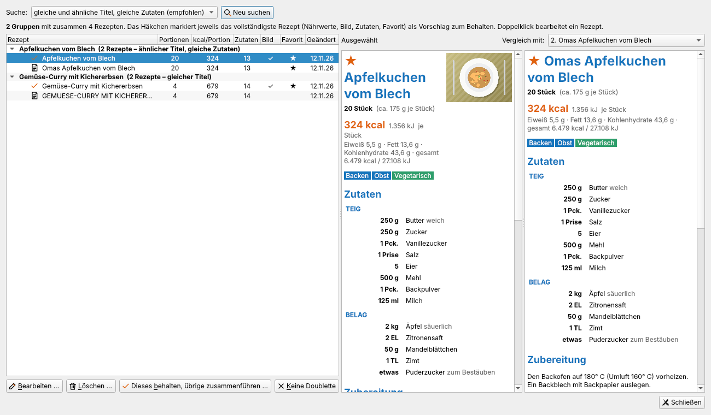

Extras und Einstellungen
Doubletten suchen
Extras → Doubletten suchen … findet mehrfach vorhandene Rezepte – typisch nach dem Import mehrerer Sammlungen.

Als Doublette gilt:
- ein gleicher Titel – Groß- und Kleinschreibung, Satzzeichen und Umlaut-Schreibweise spielen keine Rolle („Käsekuchen“ = „KAESEKUCHEN!“);
- ein ähnlicher Titel (Tippfehler, Zusätze wie „Omas …“) und weitgehend gleiche Zutaten;
- gleiche Zutaten (mindestens fünf) unter anderem Namen, z. B. „Pfannkuchen“ und „Eierkuchen“.
Die Suchstufe bestimmt, wie streng verglichen wird: „nur gleiche Titel“ (sicher), „empfohlen“ oder „großzügig“ (findet mehr, auch Fehltreffer).
Links stehen die Gruppen, darunter die Rezepte mit Portionen, kcal, Zutatenzahl, Bild, Favorit und Änderungsdatum. Das Häkchen markiert das vollständigste Rezept als Vorschlag zum Behalten. Rechts werden zwei Rezepte nebeneinander verglichen.
- Bearbeiten und Löschen (mehrere mit Strg oder Umschalt auswählbar).
- Dieses behalten, übrige zusammenführen: Das gewählte Rezept bleibt; fehlendes Bild, Quelle, Zubereitungszeit, alle Tags und die Favoriten-Markierung der übrigen werden übernommen, dann werden die übrigen gelöscht. Eine Rückfrage zeigt vorher genau, was geschieht.
- Keine Doublette(n): Gruppe bzw. Rezept wird künftig nicht mehr gemeldet.
Alle Rezepte auf einmal bearbeiten
| Befehl | Wirkung |
|---|---|
| Extras → Nährwerte aller Rezepte neu berechnen | aktuelle Nährwerttabelle auf alle Rezepte anwenden |
| Extras → Mahlzeit- und Nährwert-Tags für alle Rezepte ergänzen … | Tags nachholen, mit Vorschau der Anzahl |
| Extras → Umlaute in allen Rezepten korrigieren … | „Kaesespaetzle“ → „Käsespätzle“, mit Beispielen und Rückfrage |
| Extras → Fremdsprachige Rezepte mit DeepL übersetzen … | nennt Anzahl und Zeichenmenge und fragt vor dem Senden |
Alle Sammelaktionen zeigen einen Fortschrittsbalken und lassen sich abbrechen.
Datenbank leeren
Datei → Datenbank leeren … löscht alle Rezepte der geöffneten Datenbank. Zur Sicherheit müssen Sie den Namen der Datenbank eintippen, erst dann wird Alle Rezepte löschen aktiv. Vorher legt ViviaMeals auf Wunsch (Vorgabe) eine Sicherungskopie im Unterordner sicherung-JJJJ-MM-TT-hhmmss an. Wiederherstellen lassen sich die Rezepte über Datei → Import → ViviaMeals-Rezept (.vmr) importieren ….
Ist der Abgleich eingerichtet, werden die Rezepte beim nächsten Abgleich auch auf den anderen Geräten gelöscht.
Einstellungen
Extras → Einstellungen … (Strg+, bzw. ⌘+, unter macOS) hat drei Reiter.

Allgemein
- Darstellung: Theme und Schriftgröße (automatisch oder 85–140 %).
- Rezepte: Standard-Quelle für Rezepte ohne Quellenangabe (Quelle und Standard-Quelle).
- Programmstart: zufälliges Rezept anzeigen; Hinweis „kein Medizinprodukt“ anzeigen.
Import und Übersetzung
- Englische Rezepte ohne DeepL umrechnen und übersetzen.
- Deutsche Rezepte ohne Umlaute korrigieren.
- Tags vegan/vegetarisch/fleischgerichte/fisch, Mahlzeit-Tags und Nährwert-Tags ergänzen.
- Für Zutaten ohne Nährwerte den Lebensmittel-Assistenten anbieten.
- Übersetzung fremdsprachiger Rezepte (DeepL): einschalten, API-Schlüssel, Verbindung testen (Übersetzen mit DeepL).
Scannen
- Scanner: Windows-Scandialog, Scanprogramm, Netzwerkscanner (IP-Adresse), überwachter Ordner oder eigener Befehl; in Farbe scannen.
- Texterkennung (Tesseract): Programm (automatisch suchen oder wählen), Sprachen, Prüfen (Rezepte scannen).
ViviaMealsCheat
Das kleine Hilfsprogramm ViviaMealsCheat (eigener Installer, wird neben ViviaMeals installiert) ersetzt die Quelle vieler Rezepte auf einmal – entweder nur bestimmte Texte oder alle Quellen durch einen eigenen Text (Vorgabe „Micha B.“). Es zeigt vorher eine Vorschau, fragt vor dem Ändern nach und legt eine Sicherung an. Bitte ViviaMeals vorher schließen.